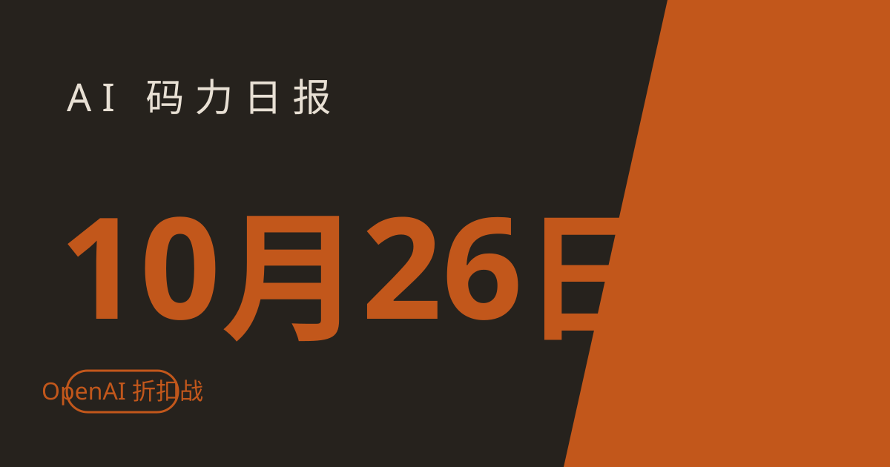

AI 码力日报 · 2026年10月26日

⚡ 一句话速览
- OpenAI 被曝最高九折挖 Anthropic 大客户：据 The Information 报道，Replit、Rippling、DataCamp 相继把大头预算挪向 OpenAI，折扣从三成到九成不等——模型越来越像可替换商品时，价格成了决胜项。
- Claude 10 月 25 日早晨报错潮：北京时间 10 月 25 日下午，Claude 多款模型请求报错，约 1 小时 39 分后解决；重度依赖 Claude Code 的人，该给关键任务加个备用模型。
- DeepSeek 再融约 150 亿美元：投前估值约 740 亿美元，宁德时代、腾讯领投，美方刚把 DeepSeek 踢出联邦采购清单两天，钱照样到账。
- Gemini 应用月活冲到 9.5 亿：Alphabet 上季云收入同比涨 82%，Gemini 不再只是"搜索的对手"，正在变成 Alphabet 自己的增长引擎。
🤖 今日 AI Coding 动态
OpenAI 被曝最高九折挖 Anthropic 大客户：模型能换，折扣就能决定归属
跟你有啥关系：如果你在公司里选模型供应商，这条消息比任何跑分都实在——当两家旗舰在应用层差距缩到可以互相替换时，谈判桌上的折扣直接改写账单。The Information 10 月 24 日的报道称，OpenAI 正以大幅折扣争夺 Anthropic 的大客户：Replit 在拿到三成以上折扣后，把年价值超 1 亿美元的合同给了 OpenAI，Replit Agent 的默认模型随之换成 OpenAI，Claude 仍可选但不再是默认；Rippling 的内部数据显示，OpenAI 在其编码工作量中的占比从 5 月的 16% 涨到 52%，Anthropic 则从 57% 跌到 18%；DataCamp 首席执行官称 OpenAI 的报价让其成本降了 80%–90%。还有一家资产超 70 亿美元的美国银行，ChatGPT 席位翻倍到 500 人却没加钱，折合每人不到 7 美元，远低于常规 20 美元以上的标价。提醒一句：这些都是谈判桌上的个案折扣，不是公开降价，别拿"九折"去跟销售砍价当筹码；但趋势很清楚——Anthropic 同期增速放缓的背景下，OpenAI 宁可牺牲短期毛利也要锁量。另一条同源消息：OpenAI 还在谈一轮最高 300 亿美元的新融资，投前估值约 1.25 万亿美元，领投方据称包括 Coatue 与阿联酋投资者，条款仍在变、尚未落定。原文链接、Replit 换约详情、融资消息
Claude 10 月 25 日报错潮：五款模型同报错误，1 小时 39 分后解决
跟你有啥关系：Claude Code 已经是你主力编码工具的话，这种"整个服务一起抖"的故障比单个模型降智更致命——你的 CI、agent 任务、后台流程会在无声无息中失败。10 月 25 日 06:14 UTC（北京时间 14:14），Anthropic 在状态页发布"多款模型请求报错"事件，受影响的是 Claude Mythos 5.1、Fable 5.1、Opus 5.5、Sonnet 5.5、Haiku 5.5，波及 claude.ai、Claude API、Claude Code 与 Claude Cowork；06:35 UTC 部署修复并进入观察，07:53 UTC 宣布解决，实际影响窗口约 06:05–06:35 UTC。我的建议很实际：给 Claude Code 的关键任务配一个备用模型与失败重试，状态页出事先看一眼再排长任务，别让一个 30 分钟的故障吃掉你一晚上的 agent 队列。同一天还有一条 Anthropic 的安全侧更新：Claude Security 开始持续监控已连接的代码仓库，不用每次手动发起扫描，修好了就标"已解决"、复发就打回"未解决"，目前面向企业客户开放测试——自 4 月开放测试以来，官方称已帮数千家组织找出超 100 万个漏洞（该数字未经独立核实）。原文链接、Claude Security 更新
Google：Gemini 应用月活 9.5 亿，云收入同比涨 82%，Argon 拿五个开发者作品打样
跟你有啥关系：Gemini 不再只是一个聊天应用——它正在变成 Alphabet 财报里增长最快的那条线，而这意味着 Google 会继续往 Gemini 生态里砸资源，你手里的 Pro 订阅只会越来越值。Alphabet 上季财报显示，Google Cloud 收入同比增长 82%，Gemini 应用月活达到 9.5 亿；云业务当季的收入增量（91 亿美元）已超过搜索业务，说明 AI 基建正在从成本中心变成增长引擎。同一周，Google 在官方博客展示了开发者用最新模型 Gemini 4 Argon 做的五个项目：3D 海鸥水面场景、叠加 NASA 野火与美国地质调查局地震数据的互动地球仪、带实时参数的涡扇发动机 3D 模型、一张图生成带开合车门与油灯的哥特式马车 3D 模型，以及卡通动物夺旗的多人浏览器游戏——其中地球仪项目就是在 Google 的 Antigravity 编码应用里做的。注意一个时间点：Argon 的开发者价格据称 12 月 1 日起翻倍，现在用 Pro 订阅里的编码工具练手，比 12 月再上车便宜。原文链接、Argon 作品展示
DeepSeek 再融约 150 亿美元：投前估值约 740 亿美元，腾讯、宁德时代领投
跟你有啥关系：开源模型这条赛道的钱没有退潮——DeepSeek 拿到的这笔钱会直接变成算力和模型迭代，下一代开源旗舰的发布节奏只会更快。10 月 22 日消息，DeepSeek 正在收尾一轮约 1000 亿元人民币（约 150 亿美元）的融资，投前估值约 5000 亿元人民币（约 740 亿美元），领投方包括宁德时代与腾讯，新投资方还有美的、美团、吉利、兆易创新等十余家，融资规模约为原定目标的两倍。背景值得并排看：就在两天前，美国刚下令联邦民事机构把 DeepSeek 技术清出系统；同一时期 DeepSeek 还被曝年化收入已达 10 亿美元、V4 旗舰 API 毛利率 70%–80%，并在筹备最早 2027 年初登陆科创板。我的判断：对国内开发者来说，DeepSeek 的 API 与开源权重仍是性价比最高的备选之一，但美国联邦层面的限制意味着出海产品要提前做模型切换预案，别把单一供应商写进架构死角。原文链接
📱 AI 应用新品
Canva Craft：先画版式再出图，设计图的文字终于不乱了
是什么：Canva 10 月 22 日上线的自研生图模型 Craft，装在 Dream Lab 里，也开放了公开 API。解决什么问题：通用生图模型做海报、菜单、活动传单时，标题总拼错、Logo 总放错位置——Craft 分两步走，先由规划模型写出版式方案（元素位置、相对大小、视觉层级、要写的文字），再由渲染模型出图，最高 2K 分辨率、30 多种画幅，支持 55 种语言的文字渲染，生成后还能通过 Magic Layers 把平面图拆成可编辑的分层元素。免费额度/价格：Dream Lab 内所有用户可用，Pro 与企业用户优先获得，免费档后续接入（截至撰写时）；Canva 自称其在 DesignArena 公开榜上仅次于 OpenAI 的图片模型。适合谁：常做社媒图、海报、演示封面的运营与设计师；纯写实摄影类场景仍不是它的强项，别拿它跟通用大模型硬比。原文链接
Ideogram Vector 1.0：直接出可编辑的 SVG 设计文件，一张 13–32 美分
是什么：Ideogram 10 月 22 日发布的 Vector 1.0，生成的不再是压平的图片，而是能在 Illustrator、Figma 里继续改的 SVG 矢量文件。解决什么问题：以前 AI 出图好看但没法改——改一个字、换一个色都得重画；Vector 1.0 给的是文件本身，每个形状、颜色都可编辑。免费额度/价格：文字转矢量 0.13–0.32 美元一张，图片转矢量 0.10 美元一张（截至撰写时），按张计费、无订阅门槛。适合谁：做 Logo、图标、品牌物料的设计师，以及需要把 AI 出图接进正式设计流程的团队；先拿一张最简单的 Logo 试，确认图层结构合你胃口再批量用。原文链接
🐑 今日羊毛
Google Antigravity 个人版免费：一个 agent IDE，不用先掏钱
一句话：Google 的 Antigravity agent IDE 与 CLI 个人版免费，有每周模型配额，不用绑卡就能把 agent 编程跑起来。
- 怎么薅：下载 Antigravity（个人版），用满 18 岁的 Google 账号登录即可用免费档，周配额不公开、以实际用量为准。直达链接
- 有效期：长期免费档（截至撰写时），配额规则以官方页面实时状态为准
- 适合谁：想零成本试 agent 编程、已有 Google 账号的开发者；重度用户迟早会撞上周配额，先拿它验证工作流再决定是否付费
Google Jules 免费：每天 15 个 agent 任务，帮你啃 GitHub issue
一句话：Google 的异步编码 agent Jules，免费档每天可跑 15 个任务、同时跑 3 个，跑在 Gemini 2.5 Pro 上，直接对接你的 GitHub 仓库。
- 怎么薅：打开 Jules，用 Google 账号登录并连接 GitHub 仓库，把 issue 指给它，任务会在后台跑、跑完提回 PR 等你审。直达链接
- 有效期：长期免费档（截至撰写时），每天 15 个任务、按滚动 24 小时计
- 适合谁：手头有一堆"想修但排不上"的小 issue、愿意让 agent 先出 PR 再人工审的人；合并前务必自己跑测试，别直接点合并
Bolt.new 免费档：每天 30 万 token、每月 100 万 token，做小应用够用
一句话：浏览器里 vibe coding 的 Bolt.new，免费档每天给 30 万 token、每月上限 100 万 token，不用绑卡就能从一句话搭出一个可发布的小应用。
- 怎么薅：打开 Bolt.new 免费注册，用一句话描述你要的应用（比如"一个番茄钟 + 待办清单"），生成后直接在浏览器里预览、改、发布。直达链接
- 有效期：长期免费档（截至撰写时），token 用完等次日或下月重置
- 适合谁：想快速验证一个小产品想法、做作品集 demo 的人；token 花得快是常态，先把需求写清楚再开局，别边想边烧
⭐ 今日 GitHub 热门项目
basketikun/infinite-canvas：把 AI 生图、修图、视频、对话塞进同一张无限画布
一句话介绍。解决什么问题：做内容时图片、视频、参考图、提示词散在四五个工具里——infinite-canvas 是一张开源无限画布工作台，把 AI 生图、参考图编辑、视频生成、对话助手、提示词库、素材管理都放在同一块画布上拖来拖去。⭐ 约 9000 star，当日新增约 376（截至撰写时）。适合：做内容、做 demo、攒素材的设计师与开发者；先从一张图的改图流程试起，别一上来就把整个项目素材全搬进去。项目地址
ZSeven-W/openpencil：开源 AI 原生矢量设计工具，提示词直接改画布
一句话介绍。解决什么问题：矢量设计工具要么贵、要么 AI 只是贴边功能——openpencil 是开源的 AI 原生矢量设计工具，支持多模型协作、提示词生成设计、直接在画布上改内容。⭐ 约 6600 star，当日新增约 100（截至撰写时）。适合：做 Logo、插画、界面稿，想用提示词起稿再手动精修的设计师与开发者；AI 起稿只是起点，交付前仍需人工检查路径与字距。项目地址
stablyai/orca：一个驾驶舱指挥一整队编码 agent，跑在你自己的订阅上
一句话介绍。解决什么问题：手里多个编码 agent 各跑各的、还得逐个盯——orca 是一个多 agent 编码指挥台，桌面、移动、远程都能管，让一队 agent 在你的订阅上并行干活、统一审 diff。⭐ 本周登上 GitHub 热门榜（截至撰写时）。适合：已经在多 agent 并行开发、被"逐个盯 agent"折腾过的团队；先拿 2–3 个 agent 的小任务试点，审 diff 的流程跑顺了再扩规模。项目地址
🤗 Hugging Face 热门模型
deepseek-ai/DeepSeek-V4.1-Flash-1017：本周 HF 趋势榜第一的 763B 开源模型
是什么：DeepSeek 的 V4.1 Flash 新版本，763B 参数，MIT 许可、商用友好。能干嘛：本地跑还是 API 调——权重开源可下载部署，参数规模决定了它更适合 API 调用或多卡部署，个人单卡别硬上；图文输入输出均支持。📥 30 天下载量约 7.3 万、点赞约 2835（截至撰写时），10 月 25 日 HF 趋势榜第一。适合：想在自己服务里接一个开源旗舰档模型、或做模型对比评测的开发者；先用 API 档验证效果，确认值得再谈部署成本。模型地址
Hugging Face Carbon-X：14.8B 的 DNA 语言模型，能直接"聊"基因序列
是什么：Hugging Face 10 月 22 日发布的开源 DNA 语言模型 Carbon-X，约 14.8B 参数、基于 Qwen3-14B，Apache 2.0 许可。能干嘛：把一段原始 DNA 序列直接贴进对话，模型能判断突变是良性还是致病、识别调控区域、按物种分组、预测下一个碱基并解释推理；40,960 token 上下文，bfloat16 权重可装进单张 80GB 显存卡、用 vLLM 跑；官方称 5 项 DNA 基准平均 66.7%，接近 GPT-6.1 Sol 的 67.5%（均为厂商公布数据，截至撰写时）。适合：做生物信息、基因组学研究的开发者与研究者；官方明确表示该模型未经临床验证，不能用于医疗决策。相关报道
🛠️ 值得一试的工具：infinite-canvas
是什么：上面 GitHub 栏目提到的开源无限画布工作台，AI 生图、参考图编辑、视频生成、对话助手、提示词库、素材管理全在一张画布上。
解决什么痛点：内容生产流程散——找图一个工具、生图一个工具、改图又一个工具，来回导素材最磨人；一张画布把"生成—参考—修改—归档"串起来，省的是切换成本，不是单点效果。
免费额度：开源项目可自部署使用（以项目许可为准），AI 生图与视频功能需接自己的模型服务、按各服务计费。
verdict： 值得试——如果你每周都要出图、做 demo、攒参考素材，这张画布值得花一个下午搭起来验证；但它不是"一键出大片"的魔法工具，画布越乱收益越低，先定好素材分区再用。
🎓 3 分钟小教程：用 Canva Craft 的"先想版式再出图"，一次做出不乱码的海报
前置条件：一个 Canva 账号，能打开 Dream Lab。
- 打开 Dream Lab，选 Craft 模型——别直接写"一张好看的海报"，先在提示词里写版式：主标题放顶部居中、副标题在主标题下方、产品图占右下三分之一、留白在左侧。
- 明确写出要印的文字本身（比如主标题的每个字），并加一句"文字必须拼写正确、不得变形"，让规划模型先把文字位置定死再出图。
- 生成后点开 Magic Layers，把图拆成可编辑图层，只改拼错的字或放偏的元素，不要整图重画——重画一次，版式就又随机了。
- 确认无误后导出 2K 图；同一版式换文案时，复制这个提示词结构、只换文字与产品描述，版式稳定性会明显好于每次重写提示词。
预期效果：海报上的标题拼写正确、元素位置可控，改一处不用整图重来；代价是提示词要写得比平时长一倍——这正是 Craft 想要你付出的"规划成本"。
数据截至撰写时，仅供参考。